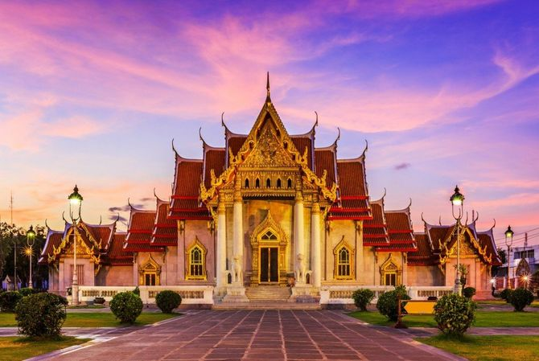

Bangkok mag zich met meer dan 11 miljoen inwoners met recht een wereldstad noemen. Het is niet alleen de grootste stad van Thailand, het is, ondanks de bedwelmende drukte, ook één van de meest bezochte steden van Azië. Waarom? Bangkok heeft enorm veel te bieden! Van magnifieke tempels, monumenten, en paleizen tot luxe hotels, enorme shopping-malls, uitstekende restaurants en vele uitgaansmogelijkheden.

De tempels van Bangkok
Als je naar Thailand reist zul je al snel ontdekken dat het boeddhisme een belangrijke rol speelt in het leven van de Thai. Maar liefst 95 procent van de bevolking is boeddhist. In Bangkok is dit niet anders met als gevolg dat het er werkelijk stikt er van de tempels (in het Thais bekend als “wats”). De één nog mooier dan de ander. Van kleine lieflijke tempels, die je niet in de reisgids ziet staan, tot schitterend versierde bouwwerken die tot de mooiste van de wereld behoren. Een bezoek aan Bangkok is niet compleet zonder tenminste twee tempels te bezichtigen. Één van de bekendste tempels van Bangkok is de Tempel van de Smaragden Boeddha, Wat Phra Kaeo. Het Koninklijk Paleis grenst aan deze tempel en moet je ook zeker gaan bekijken. Dit majesteuze paleis biedt een bijzondere combinatie van Thaise en Italiaanse bouwstijlen. Wat Pho, ten zuiden van het Koninklijk Paleis, is één van de oudste en grootste tempels van Bangkok. Deze tempel staat ook bekend als “de tempel van de liggende Boeddha” dankzij het 46 meter lange liggende Boeddha beeld dat je hier kunt zien. Nog een aanrader: Wat Arun of ook wel “de tempel van de dageraad”. Dit is de meest iconische tempel van Bangkok. Een schitterende tempel met een prachtige ligging aan de westelijke oever van de Chao Phraya-rivier. 
Beste reistijd Bangkok
De beste periode om Bangkok te bezoeken is in de winterperiode van november tot en met februari. Het is altijd warm in Bangkok, maar in die periode is de temperatuur toch aangenamer en bovendien is de kans op regen dan kleiner en is de luchtvochtigheid minder hoog. Het wordt dan overigens nog makkelijk 30 graden Celcius in Bangkok. De meeste regen valt in de maanden september en oktober.